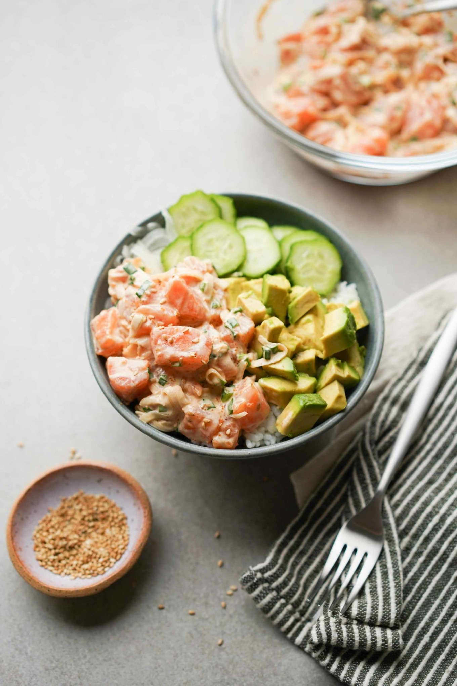

Spicy Mayo Salmon Poke

Salmon poke is another variation of traditional Hawaiian poke where it is made with spicy sriracha mayo and other ingredients such as sweet onions, green onions, roe, and roasted seasame seeds. While this is mainly a traditional Hawaiian snack, it uses a lot of Japnese and other Asian ingredients to bring all the flavors together.
Ingredients
- salmon (sashimi grade)
- maui onions - You can use sweet onions or shallots
- green onions
- soy sauce
- seasame oil
- seasame seeds
- salmon roe
- japanese kewpie mayo
- sriracha
Steps
- Cut salmon filet into 1/4 inch cubes.
- In medium bowl, combine salmon cubes, seasame oil, and soy sauce together until it's incorporated.
- In small bowl, combine Kewpie mayo and sriracha together until it is mixed. Add this to bowl of salmon cubes.
- Add the salmon roe, green onions, sliced sweet onions, and sesame seeds. Gently mix all ingredients then cover with lid and let it refridgerate for 30 minutes to allow flavors to marinate.
- Remove from fridge and then serve with a fresh warm bed of rice.